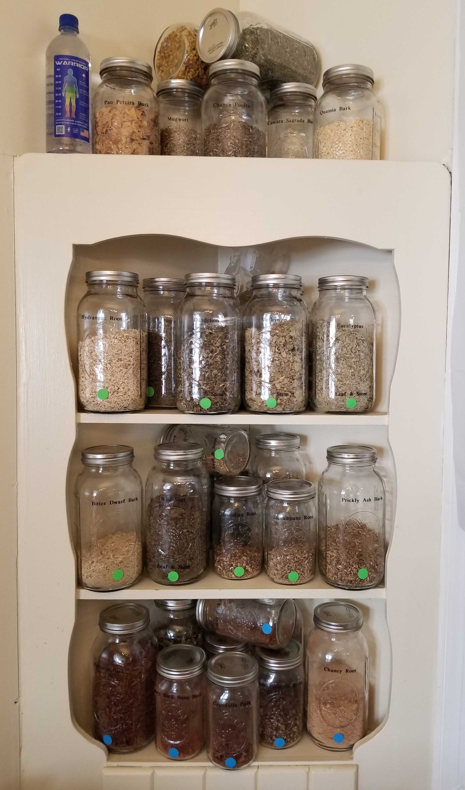
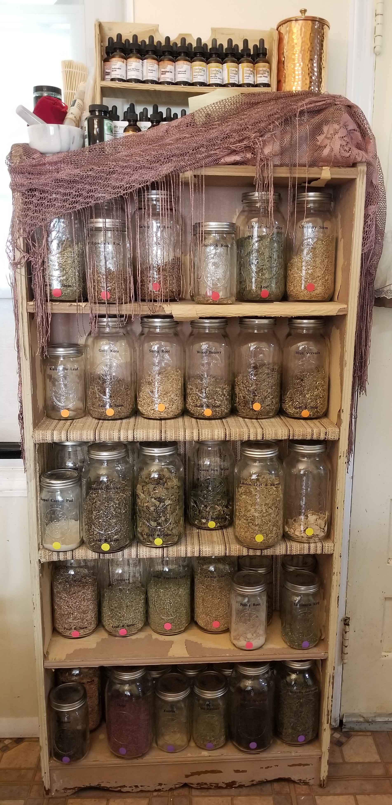
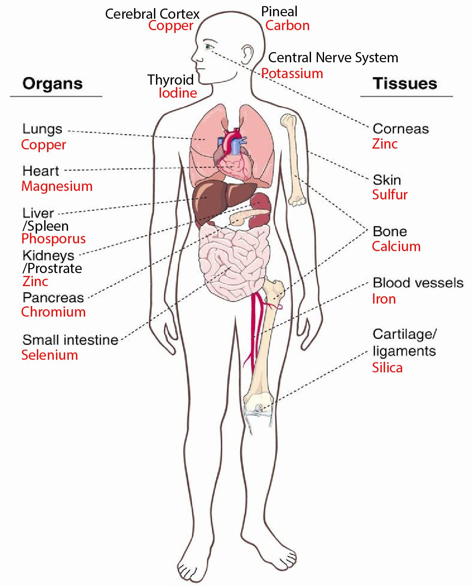
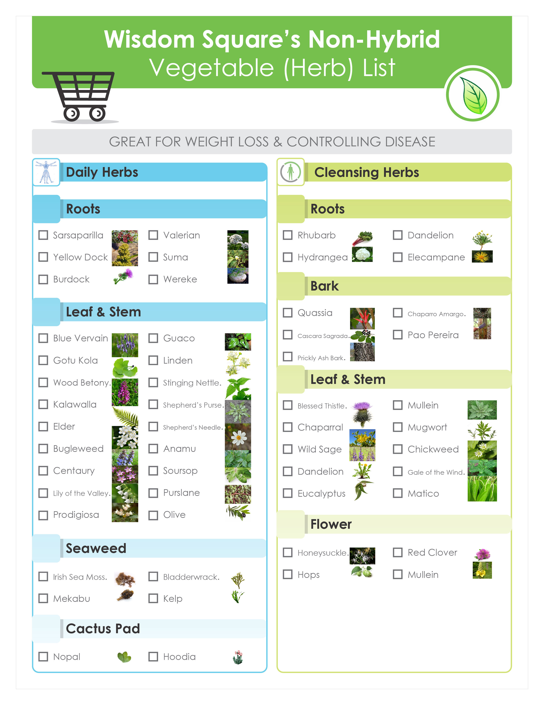
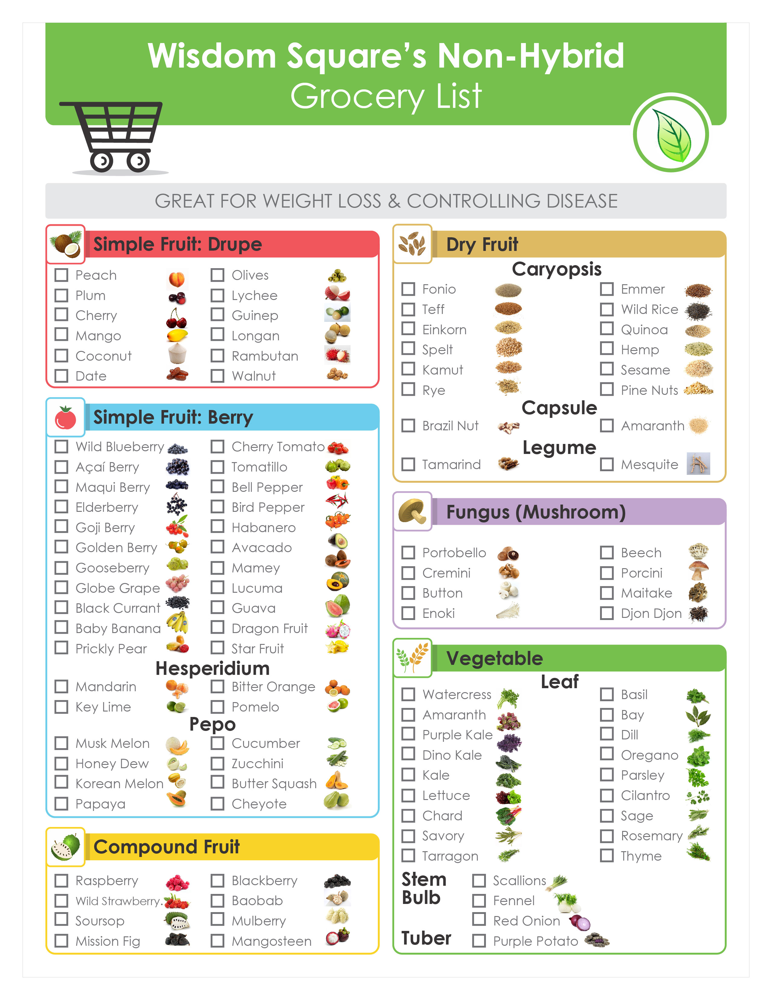

Mini Guide for Weight Loss Supplements
3 Chapters (ways of using herbs) = 1 Healthier / Slimmer version of YOU
1. Coming home late from work tired, running towards the pantry to grab some potato chips... Instead satisfy cravings the right way.
2. Start a crash diet on Monday to make up for the cheating over the weekend, lose 5 pounds by the end of the week then gain it right back because it was only water weight you lost... Instead lose fat, not water weight.
3. Out at a restaurant or ordering takeout to bring home, then wake up the next morning feeling bloated... Instead lose weight while you eat.

This is your nutritional insurance for smart, busy people.
Most people in today's world have a family or career that consumes their time. It's after having children or getting a promotion that we start to gain weight since we have far less time and far more stress.
This is your ticket off the weight-loss roller coaster.
I'll be honest... I didn't get into herbs to lose weight. If that was the case I probably would have never took the time to study them with so many magic pill products out there that are clearly scamming people out of their time and money.
Instead, my reason was due to the inablity of doctors able to save my grandfather's life who rasied me.
He had fallen on ice, and despite a brain scan that showed everything was alright... almost a year later it was discovered he did in fact have a slow bleeding in his brain. At 95 years old (depsite being healthier than most people in thier 50's) no one was willing to perform surgery.
Still I just knew there had to be something that existed besides surgery that could have at least helped him, if not saved him.
At this point I already knew a bunch about nutrition and how the food we eat can affect us... but I realized I didn't know a thing about herbs.
So I decided to read everything I could get my hands on about this unexplored teritory.
Half a year after my grandfather's untimely loss, I found what I was looking for.
Two herbs that can stop internal and external bleeding (which later saved me from having to get stiches).
Another herb I found that improved my breathing better than my asthma inhaler that I had been taking since I was in kindergarten.
After that I found a few more herbs that helped my friends and I avoid getting sick during the flu season.
Then I attempted to help my roommate of 4 years during college lose weight, despite already eating less than I did normally and never losing any weight.
4 months later he lost 46 pounds.

I decided it was time to get this to more people that I could help.
I believe that just because someone doesn't have the time to cook everyday or make it to the gym because they're caring for their family or growing their career doesn't mean they have to sacrifice their health and weight.
There is hope... and that begins with the right wild herbs.
So I went ALL IN... and got my hands on every wild herb I learned about online to test it out on myself (then family and friends) to see if they actually worked.
|
 This is my dining room and I LOVE IT! |
 |
I realized most herbal products don't work or only provide a shadow of the results they promise because they unknowingly mix together unnatural weak herbs with natural strong herbs.
We already know to avoid food that is GMO... but what we don't know is that most of the food in America's grocery stores (fruits and vegetables) are created by farmers through a process called plant grafting in order to make them bigger, with less seeds, and more resilant to grow outside of their natural habits in cold weather.
Just like how a child can thrive in the right enviorment... the same goes for our food. Once you tr to grow it elsewhere it cannot survive and that's when farmers step in to cross together a native plant with an unative plant... simliar to the process of GMO.
No one talks about this because practically all the food we have today is made like this and most people don't notice the difference right away.
But the fact remains that we can no longer except to use "our food as our medicine" like we did thousands of years ago.
It's also why so many people develop allergies to certain food. Because it's unatural and some people are more sensitive to it than others.
I have a friend that's allergic to lemons, oranges, and grapefruit (practically all citrus fruits), but when I told him to try pommello (the ancestor of grapefruit) he had no bad reaction. Go figure.
(disclaimer: use your best judgement, I've seen this for a few people but of course everyone is going to be different and we should utmately take responsiblity over ourselves, which is the point of me sharing this knowledge with you to empower you with more options)
So again, if you'd like some nutritional insurance in your life to help with any health-related problem you might have then this is the best place to be.
I've read countless books before typing this, so what I'm about to share with you is an accumliation of my current conclusion on the best way to take care of oursevles.
To become a better version of ourselves for our families sake, our career's sake, and ultimately our own sake.
Let's take the plunge now and jump right in!
1. Satisfy Cravings the Right Way - Stop overeating or emotional eating
The trouble is we think we have to eat to fill our stomachs. The heavier the meal, the better it will be to satisfy hunger. Just look at any Snicker's commercial.
But that's not the truth!
It's like trying to fill up your gas tank with diesel fuel... sure you're car will be able to pull away from the gas station, but how long do you think it will function?
The same thing happens to us.
We get hungry not for a mass of solid fiber... but for MINERALS.
What they never taught us in school was that minerals are one and the same with the element on the periodic table!
Forget about protein being the building block of life... the elements that compose everything in this physical universe are the true building blocks and the only thing we need to grow and develop!
So with so many minerals / elements that exist (90 that are naturally occuring to be precise) how do we know what's the ones we need to focus on.
The advice your grandmother told you comes into play now... Listen to your body!
Your body intuatively knows what it needs and gives you very obvious signs when you're devicident.
For example.. do you crave coffee? Do you find it hard to get past the afternoon hump while you're at work?
Or maybe you have to do a lot of studying or focus for long periods of time, but just can't seem to for long enough without getting distracted.
Maybe you realize that in certain situations your emotions get the best of you and it can feel like you're not in control all the time.
Whatever it is, this is your body telling you that you're craving a missing mineral.
(This just got pretty deep for a weight loss guide didn't it?)
So to make things simple, I put together this body - mineral chart for you to reference to figure out what you need the most to satisfy physical and emotional cravings the right way with food.

It's an amazing coincidence... almost by perfect design you could say... that each part of the body requires one mineral more than all the others...
And that each plant / herb is highest in one mineral more than the others too.
Now all you have to do is pick the right herb for the job.

It really is that simple. No need for this to be complicated.
Each one of the above herbs can easily be found in three forms... whole used for tea, powdered used for capsules, or fermented used for tinctures.
The tincture form (or better yet, though more rare, spagyeric) is the strongest way to get the benefits of the herb and is convenient enough for you to take with you even if you travel frequently. It fits right in your purse and takes only a few seconds to squeeze a few drops underneath your tongue for the herb to work instantly.
Nothing like a vitamin D or fish oil pill that leaves you wondering if you just wasted your time bothering with it.
2. Burn fat, not water weight
Now that you're no longer hungry from the above herbs that are safe to take daily...
It's time to focus on burning fat, and not just water weight!
You see, when you eat less food you end up losing water weight for the first 2-5 days.
If you're determined enough than after that period you will start to burn fat.
This doesn't sound easy, does it?
Which probably explains why 65% of the average dieter, and 95% of crash dieters gain back (or exceed) thier pre-dieting weight... EVERY... TIME.
It's a viscous cycle and one you can skip!
Because most people have never heard of these herbs because they come from other countries (and wouldn't make big pharma or the weight loss industry happy), we're fed the LIE of:
EAT LESS, MOVE MORE.
Which again... is a LIE.
If this actually worked than 65% of people in America wouldn't be considered overweight.
It's like going to an Alchol Annoymace meeting and telling those people to just STOP DRINKING.
They would look at you like you were crazy!
So what's the better way of doing this?
Here's the list of herbs that improve your digestion and get you going to the bathroom to lose fat fast (the natural safe way):
Because by definition, cleansing herbs happen to be very bitter... I would recommend capsules or tincures instead of drinking this as a tea. Unless you have a strong fortitude, then be my guest.
I personally can't handle the taste... probably because I happen to have a strong sweet tooth.
Still... there are herbs that taste great (which can be added onto your meals) to lose weight.
Sure they're going to be as strong as what I shared above... but hey, why miss an opportunity to improve your health and weight?
That would just be silly, right?
3. LOSE weight while you EAT!
Yes, this is possible.
No, it doesn't require dark magic either.
You can improve the flavor of what you're eating beyond the traditional (boring) salt and pepper.
Put away that Adobo spice blend, and let's focus on the individual best herbs.

I recommend trying all of these culinary herbs. Make it a fun experiment with your family... hell turn it into a scavenge hunt even.
Your health and weight-loss journey should be fun after all. If not, then why would you stick with it?
The only way to know if you like an herb is to first try it. Then double down on just a few herbs that stick out to you and keep those always stocked in your kitchen.
Bring your one favorite herb in your purse for when you go out to eat.
Maybe that sounds weird now, but I believe it sounds even weirder to spend your money on food that you already know is going to hurt you in the long run.
You deserve to do what you can now to protect yourself and help you thrive!
Trust me, you will mentally and emotional feel the difference when you're consistent with these herbs... it won't just be your body that thanks you for it.
If you've made it this far then I just want to let you know that you're AMAZING!
You took the time out of your busy schedule to learn how to take your health and weight into your own hands to improve it.
I love rewarding and surprising people that deserve it, so I'm going to now share with you a special invitation to jump on a call with me FREE of charge.
I won't leave this offer here for long (since I can only help so many people at the same time).
If you're really serious about losing weight and still have some questions after reading this, then I invite you to click here to schedule a 45 minute session with me.
You'll get to tell me about your current situation and I'll provide you with some custom recommendations right on the spot.
You have nothing to lose, and everything to gain.
I can't wait to actually speak with the people that read this article that I can help further.